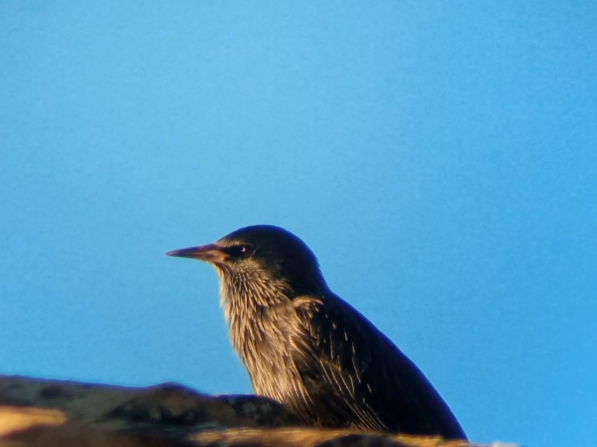

Javier Senabre Urrea
Ingeniero informático · IA, datos y desarrollo de software
Soy ingeniero informático. Trabajo con inteligencia artificial y análisis de datos para resolver problemas reales. También, desarrollo software con estas herramientas.
Tengo experiencia en proyectos de clasificación, clustering y deep learning, y me interesa aplicar la IA y la ciencia de datos para generar valor a partir de los datos. Busco oportunidades laborales para crecer.
Proyectos
Filtra por tecnología para ver solo los que te interesan.
Trayectoria
Formación y experiencia profesional.
Estudios
- Máster en Ingeniería Informática (MUII)Universidad de Castilla-La Mancha, Albacete · 2024–2026Especialidad en Big DataTFM: Clustering en balonmano de alto rendimiento
- Grado en Ingeniería InformáticaUniversidad de Castilla-La Mancha, Albacete · 2020–2024TFG: Clasificación automática de pájaros según su canto
Experiencia laboral
- Ingeniero informático · Panadero SL3 meses
- Desarrollo de un chatbot para la empresa.
- Análisis y definición de los requisitos del chatbot.
- Automatización de procesos con n8n y uso de API REST.
- Pruebas (testing) del funcionamiento del chatbot.
Chatbotn8nAPI RESTIngeniería de requisitosTestingAutomatización - Desarrollador de videojuegos de realidad virtual · Cerebroom VR Games3 meses · Albacete
- Desarrollo de videojuegos de realidad virtual en C#.
- Trabajo en equipo con metodología SCRUM.
C#Realidad virtualSCRUMTrabajo en equipo
Habilidades
Lo que uso para convertir datos en soluciones.
Machine learning
Deep learning y audio
Librerías de ML
Análisis y visualización
Lenguajes
Datos, cloud y web
Ingeniería de software
Herramientas
Competencias
Idiomas y otros datos relevantes
Niveles de idioma según el Marco Común Europeo de Referencia y otros datos de interés.
Español
NativoInglés
B1Mejorando a C1
Más información
Observación y grabación de aves
Mi afición fuera de la pantalla: salir al campo a observar y grabar pájaros. De ahí nació mi TFG sobre clasificación de aves por su canto, y sigue alimentando mis proyectos de audio.

El estornino negro
Famoso por su plumaje negro de reflejos iridiscentes, su canto lleno de imitaciones de otros sonidos y sus espectaculares bandadas en vuelo.